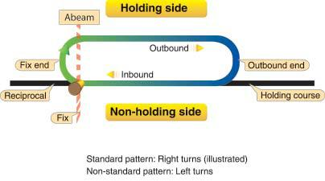
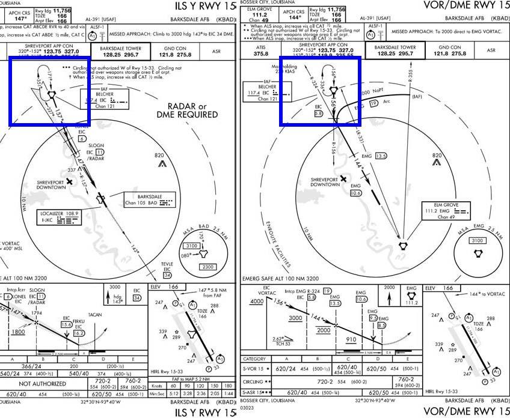
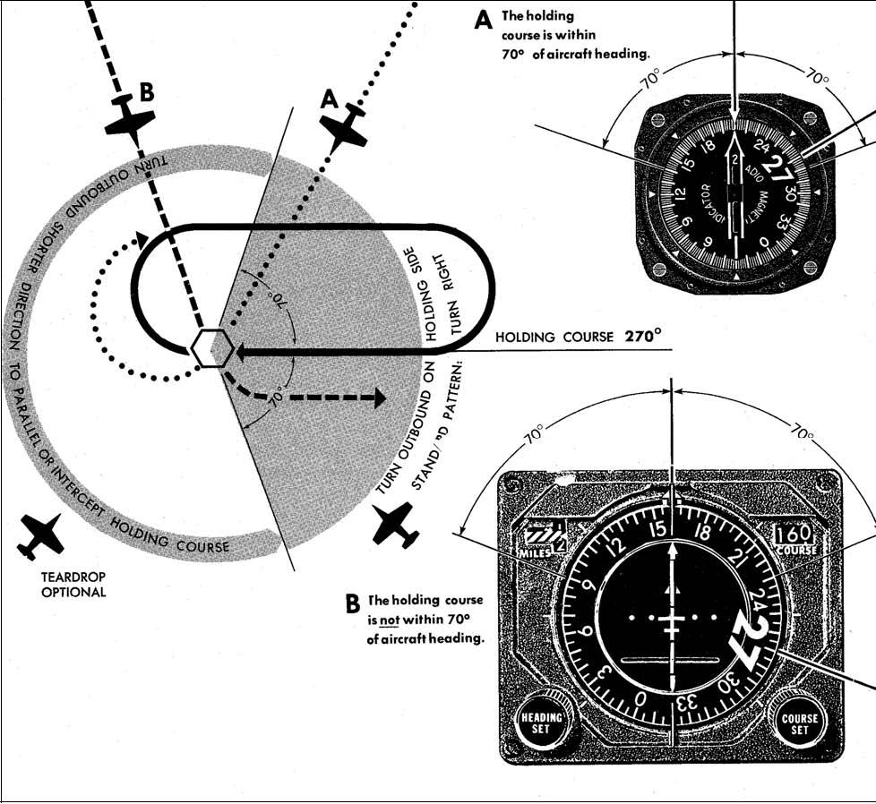
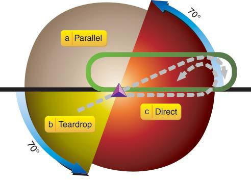
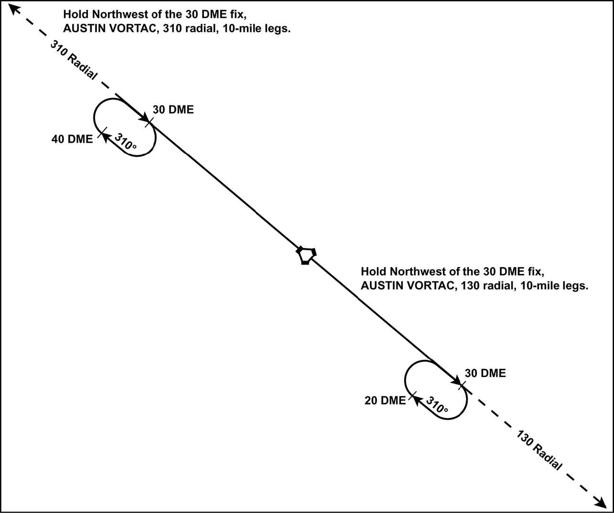

Chapter 8: HOLDING
8.1. Definition.
8.1.1. Basic. Holding is maneuvering an aircraft in relation to a navigation fix while awaiting further clearance. The standard no-wind holding pattern is flown by following a specified holding course inbound to the holding fix, making a 180° turn to the right, flying a heading outbound to parallel the holding course, and making another 180° turn to the right to intercept and follow the holding course to the fix (Figure 8.1). The holding pattern is nonstandard when the turns are made to the left. Unless otherwise instructed by ATC, pilots are expected to hold in a standard pattern. The standard no-wind length of the inbound leg of the holding pattern is 1 minute when holding at or below 14,000 feet MSL and 1½ minutes when holding above 14,000 feet MSL. DME holding patterns specify the outbound leg length. If holding at a DME fix without specified outbound leg length, use timing procedures listed above.
Figure 8.1. Holding Pattern.

8.1.2. Course Guidance. Holding patterns have inbound course guidance provided by a VOR, TACAN, NDB, localizer, or RNAV/GPS. While in holding, the localizer signal is the most accurate method of determining aircraft position. However, if a VOR, TACAN or NDB also defines the holding pattern, it's the pilot's option as to which NAVAID to use.
8.1.2.1. NOTE: AFMAN 11-226 (TERPS), states that the use of TACAN station passage as a fix is not acceptable for holding fixes (regardless of altitude) or high altitude initial approach fixes (those IAFs which are at or above FL180). This restriction is driven by the TACAN fix error involved in station passage. Therefore, if the aircraft is TACAN-only equipped, do not hold directly over a TACAN or VORTAC facility or plan to use these facilities as high altitude IAFs. TACAN station passage can be used to identify an IAF below FL180 regardless of whether the approach is published as a Low or High altitude approach.
8.2. Holding Instruction.
8.2.1. Charted Holding Patterns. ATC clearances requiring holding where holding patterns are charted, include the following instructions:
8.2.1.1. Direction. Direction of holding from the fix.
8.2.1.2. Holding fix. The name of the holding fix.
8.2.1.3. Expect Further Clearance. ATC is responsible to issue an Expect Further Clearance Time (EFC) based on the best estimate of any additional enroute/terminal delays. Pilots should request an EFC any time they are directed to hold without one.
8.2.1.3.1. Example: "Cleared to NIGEL, hold east as published, expect further clearance at 1645Z, time now 1635Z."
8.2.1.3.1.1. NOTE: AIM describes "charted" holding patterns as "those holding patterns depicted on U.S. government or commercially produced (meeting FAA requirements) low/high altitude enroute, and area or STAR charts." Although the AIM and GP do not specifically mention the use of published holding patterns depicted on instrument approach procedures, in day-to-day operations they are used frequently. If the controller clears you to "hold as published" using a holding pattern published on an approach plate, make sure you are holding in the correct pattern. In some situations, there may be more than one published holding pattern at the same fix. (See Figure 8.2) If there is any doubt about your clearance, query the controller. 8.2.2. Non-charted Holding Patterns. If ATC clears you to hold in a non-charted holding pattern, they will provide you with the following information:
8.2.2.1. Direction. Direction of holding from the fix.
8.2.2.2. Holding fix. The holding fix.
8.2.2.3. Holding course. Radial, course, bearing, airway, or route on which the aircraft is to hold.
8.2.2.4. Leg length. Outbound leg length in miles, if DME or RNAV is to be used.
8.2.2.5. Direction of turn. Left turns, if nonstandard.
8.2.2.6. Expect Further Clearance. Time to expect further clearance and any pertinent additional delay information.
8.2.2.6.1. Example: Hold Northwest of the 106 radial, 40 DME fix, 10-mile legs, left turns. Expect further clearance at 1725Z, time now 1710Z.
Figure 8.2. Charted Holding Pattern.

8.2.3. Clearance Limit. ATC should issue holding instructions at least 5 minutes before reaching a clearance limit fix. When an aircraft is 3 minutes or less from a clearance limit and a clearance beyond the fix has not been received, the pilot is expected to start a speed reduction so that the aircraft will cross the fix at or below the maximum holding airspeed. If holding instructions have not been received upon arrival at the fix, hold in accordance with procedures in FLIP. For two-way radio failure holding procedures, refer to the FIH.
8.2.4. Maximum Holding Speeds. Maximum holding airspeeds are defined by TERPS and have nothing to do with the holding speed specified in the aircraft flight manual. Holding speeds in the aircraft flight manual are typically minimum speeds that correspond to a maximum endurance speed. Do not exceed the maximum holding airspeeds listed below. (Table 8.1) ATC may be able to approve holding speeds in excess of these maximums, if aircraft performance considerations require. Adherence to the maximum speeds shown below, or the published maximum holding speed, whichever is lower, will ensure you remain within protected airspace. For ICAO holding airspeeds, refer to Chapter 17.
Table 8.1. Maximum Holding Airspeeds.
| ALTITUDE (MSL) | Maximum Speed |
|---|---|
| MHA through 6,000' | 200 KIAS |
| Above 6,000' through 14,000' | 230 KIAS |
| Above 14,000' | 265 KIAS |
8.2.4.1. NOTE: At USAF airfields, the maximum holding airspeed is 310 KIAS unless otherwise noted. At USN airfields, the maximum holding airspeed is 230 KIAS unless otherwise noted.
8.3. Holding Pattern Procedures.
8.3.1. Holding Procedure. The angular difference between the inbound holding course and the heading at initial holding fix passage determines the direction of turn to enter the holding pattern. Holding pattern sizes can vary greatly depending on the altitude of the holding pattern, primary aircraft the procedure was designed for, and other factors. Pilots have no way of knowing the design limits of protected airspace for a particular holding pattern.
8.3.2. Established in Holding. You are considered established in the holding pattern upon initial passage of the holding fix.
8.3.3. Bank Angle. Unless correcting for known winds, make all turns during entry and while holding at: 3 degrees per second, or 30 degree bank angle, or bank angle commanded by the flight director system, whichever requires the least bank angle. The bank angle on the entry turn may be varied (up to 30 degrees maximum) to obtain the desired displacement in the holding pattern.
8.3.4. Entry Turns. There are a number of techniques to enter holding which should keep you within holding airspace. Although any technique may be used to enter holding, using the commonly accepted ones described below will keep you within holding airspace and insure your actions are predictable to the air traffic controller. Therefore, it is recommended that you use one of the described techniques.
8.3.4.1. Technique A ("70 Degree Method" Figure 8.3):
8.3.4.1.1. Within 70°. If the inbound holding course is within 70° of the aircraft heading, turn outbound in the direction of holding and onto the holding side (direct entry) Upon completion of the outbound leg, proceed direct or intercept the holding course to the fix.
8.3.4.1.2. Not within 70°. If the inbound holding course is not within 70° of the aircraft heading, turn outbound in the shorter direction to parallel the holding course. If this turn places you on the non-holding side, either parallel (adjust for wind) or attempt to intercept the holding course inbound. If you are on the non-holding side or on the holding course at the completion of the outbound leg, turn toward the holding side, then proceed direct or intercept the holding course to the fix.
8.3.4.1.3. Teardrop. The teardrop entry may be used at pilot discretion when entering holding on a heading conveniently aligned with the selected teardrop course. As a guide, consider yourself conveniently aligned when your aircraft heading is within 45° of the selected teardrop course. Upon reaching the holding fix, turn on the holding side and proceed on an outbound track not to exceed 45° from the outbound course. (Depending on your offset requirements, a teardrop course of less than 45° may be desired.) If course guidance is available, attempt to intercept the selected teardrop course outbound. Upon completion of the outbound teardrop course/heading, turn toward the holding course to intercept the holding course inbound.
Figure 8.3. 70 degree Method.

8.3.4.2. Technique B ("AIM Method"): Enter the holding pattern based on your heading (±5°) relative to the three entry sectors depicted in Figure 8.4. Upon reaching the holding fix, follow the appropriate procedure for your entry sector:
8.3.4.2.1. Sector A (Parallel). Turn to a heading to parallel the holding course outbound for the appropriate time or distance, then turn towards the holding side and return to the holding fix or intercept the holding course inbound.
8.3.4.2.2. Sector B (Teardrop). Turn outbound to a heading for a 30-degree teardrop entry (on the holding side) for the appropriate time or distance, and then turn towards the holding course to intercept the inbound holding course.
8.3.4.2.3. Sector C (Direct). Turn to follow the holding pattern.
Figure 8.4. AIM Method.

8.3.5. Timing. The maximum inbound leg time is 1 minute at or below 14,000 feet MSL and 1½ minutes above 14,000 feet MSL. On the initial outbound leg do not exceed the appropriate time for the altitude. Adjust subsequent outbound legs as necessary to meet the required inbound time. When a specific DME or RNAV distance is specified, commence the inbound turn at that distance. ATC expects pilots to fly the complete holding pattern as published. Therefore, do not shorten the holding pattern without clearance from ATC.
8.3.5.1. Outbound. Begin outbound timing when over or abeam the fix. If you cannot determine the abeam position, start timing when wings level outbound.
8.3.5.2. Inbound. Begin inbound timing when wings level inbound.
8.3.5.3. TACAN/DME/RNAV. For TACAN, charted DME holding, or RNAV holding; start turns at the specified DME limit or RNAV distance.
8.3.5.4. Timed Approaches. When pilots receive a clearance specifying the time to depart a holding pattern, adjust the pattern within the limits of the established holding procedure so as to depart at the time specified.
8.4. FMS Holding Procedures.
FMSs may provide navigation guidance for holding pattern construction and entry. Depending on specific aircraft equipage, FMS holding pattern entry procedures may not match FAA or ICAO standards. Aircrews are responsible for understanding aircraft-specific FMS holding procedures and ensuring that holding entry procedures match the appropriate FAA/ICAO procedures. In some cases, pilot intervention may be required.
8.5. Holding Pattern Suggestions.
Here are some suggestions and points to consider when flying holding patterns (Figure 8.5):
8.5.1. Copying Holding Instructions.
8.5.1.1. Direction. Compare the direction of holding to the wind arrow used in weather depictions. (The wind arrow shows the direction from which the wind comes.)
8.5.1.2. Fix. The head of the arrow is the fix; fly the inbound course to the head.
8.5.1.3. Draw. Draw or visualize the remainder of the pattern by the instructions given.
8.5.2. Timing.
8.5.2.1. Inbound Legs. After completing the first circuit of the holding pattern, adjust the time outbound as necessary to provide the desired inbound times. In extreme wind conditions, even though the turn inbound is initiated immediately after completing the outbound turn, the inbound leg may exceed the 1 or 1½ minute limit. In this case, you are authorized to exceed the time limit inbound.
8.5.2.2. Adjustments. Knowing the time it takes you to fly a holding pattern will allow you to meet an EFC. As an approximation, 1/100th of TAS will give the number of minutes to fly a 360° turn at 30° of bank. (For example, at 350 knots true airspeed (KTAS), a 360° turn takes about 3.5 minutes.) Aircraft flying standard rate turns cover 360° in 2 minutes. Add to the time for turning the number of minutes to fly the inbound and outbound legs.
Figure 8.5. Copying Holding Instructions.

8.6. Drift Corrections.
8.6.1. Calculating drift corrections. Knowledge of drift correction and TAS relationship can be very useful, especially in those instances where course guidance is not available; for example, the outbound leg of a holding pattern or a procedure turn. The following techniques may be used to determine approximate drift correction when the crosswind component is known:
8.6.1.1. Mach. Divide the crosswind component by the mach times 10. Example: 50 knots crosswind and 300 KTAS (.5M) = 10° drift correction, or
8.6.1.2. TAS. Divide the crosswind component by the aircraft speed in nautical miles per minute. Example: 30 knots crosswind and 180 KTAS (3NM per minute) 30÷3 = 10° drift correction.
8.6.2. Applying drift corrections. Compensate for wind effect primarily by drift correction on the inbound and outbound legs. When outbound, triple the inbound drift correction; e.g., if correcting left by 8 degrees when inbound, correct right by 24 degrees when outbound.
8.7. High Altitude Approach Plate Depiction (postage stamp).
Holding pattern entry turns depicted on high altitude approach charts are provided for pilot convenience and are consistent with the intent of the AIM entry procedures.
8.8. Descent.
If established in a holding pattern that has a published minimum holding altitude, and assigned an altitude above that published altitude, pilots may descend to the published minimum holding altitude when cleared for the approach (unless specifically restricted by ATC). Minimum holding altitude is the same as the IAF altitude for holding patterns where the IAF is located in the holding pattern unless otherwise noted or depicted. For those holding patterns where there is no published minimum altitude at the IAF and no depicted holding altitude, the minimum holding altitude is the same as the minimum altitude at the FAF (or next segment). In this case, upon receiving an approach clearance, maintain the last assigned altitude until established on a segment of the instrument approach procedure being flown. (If a lower altitude is desired, request clearance from the controlling agency.)